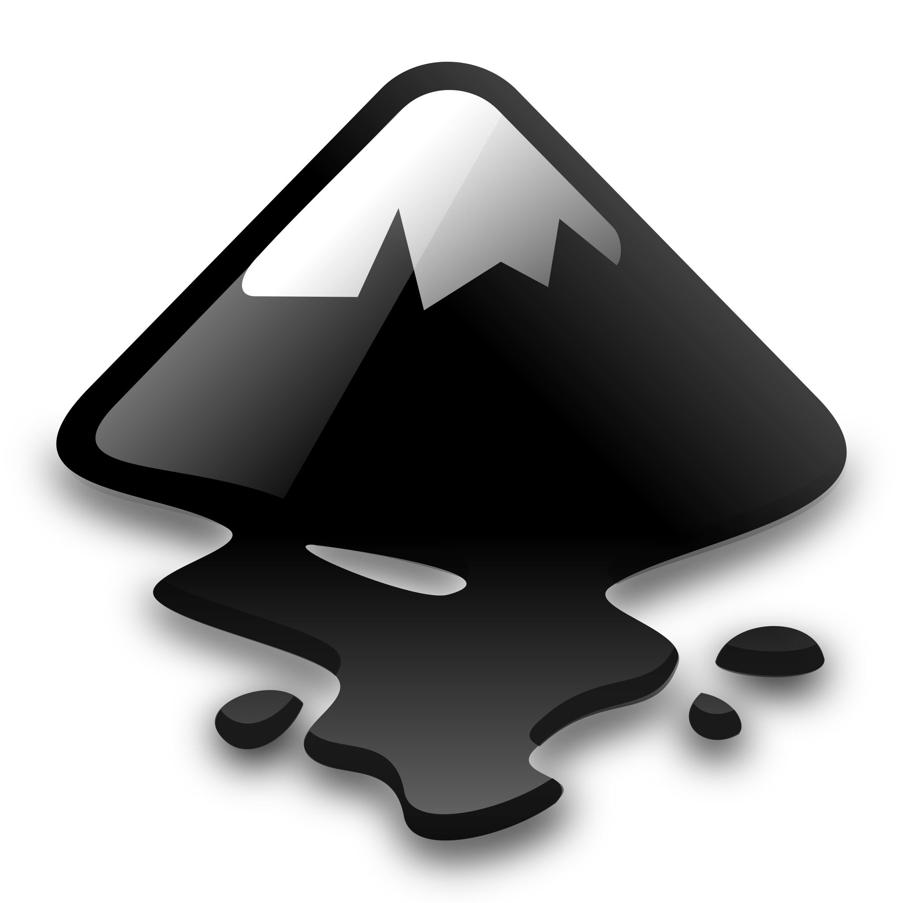
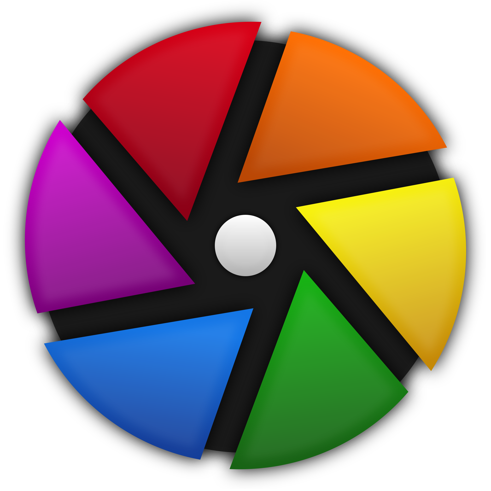
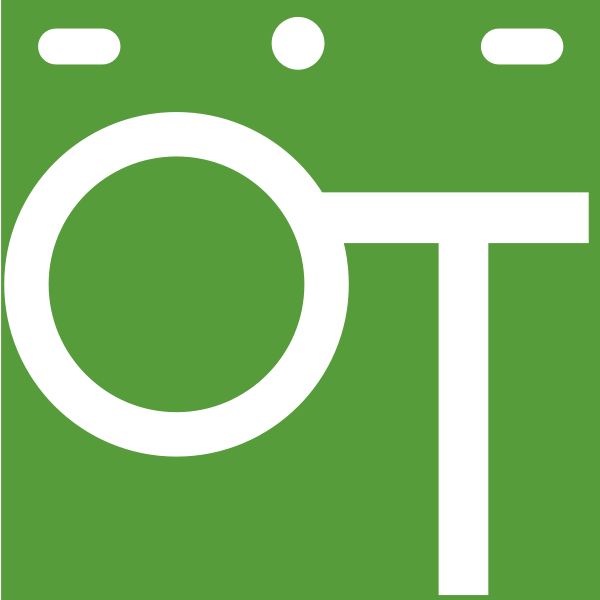

Photo Manipulation
GIMP
GIMP (GNU Image Manipulating Program) is a free Open Source Image Manipulating software that has been developed by "GIMP Development Team". It was first introduced in 1995 at "The University of California" as a semester project. After that, In 1996 , it was published publicly. It has been considered as the best "Adobe Photoshop" alternative. It has almost every features of "Adobe Photoshop" except for some features.
Pros.
- It's totally free
- Runs smooth , even on consumer grade computer
- Has almost every features of "Adobe Photoshop"
- Good for beginners and beyond
- Good brush options for digital art
- Has a supporting community
Cons.
- It's UI is somewhat a little bit backdated
- Doesn't have "Layer Adjustment" and "CMYK format support"
- As it's free, it relies on the donation of it's community. So , every update takes nearly 4-5 months or even more.
- It cannot edit RAW Photo directly
Conclusion
Now, we all know abot the good side and bad side of "GIMP". The good sides are more than the bad side. Also don't get annoyed with the bad side. "The GIMP Development Team" said that they will bring the "Layer Adjustment" and the "CMYK Colour support" on their upcoming GIMP version 3.2. They said that it would be a "Game Changer" (Possibly break the internet!😂) .However, the present version is GIMP 2.10.4. GIMP version 2.99 has been released for beta use that has new updated UI . Hoping to get the new update soon.
Learning Resources
If you're thinking that " But from where I'll learn the usage of these softwares?" then don't worry. I got us covered. Here are some resources from where you can learn almost everything of these softwares. Here are some YouTube keywords :
- TJ Free
- Davies Media Design
- Parker Photograpic
- Logos By Nick
Vector Illustration
Inkscape
Inkscape is a free Open Source Vector Illustrating Software developed by the "Sodipodi Developers". "Sodipodi" is the predecessor to Inkscape. Inkscape is considered as the best "Adobe Illustrator" alternative. Unlike "GIMP" it has every single tool of "Adobe Illustrator". It only lacks of some minor features that is being hoped to come in upcoming future versions.
Pros.
- It's main morale is "Draw Freely"
- Runs smoothly , even in consumer grade computers
- Poweful text editing tool
- Every path operations, Live path effects , pen tool and all other tools are included
- It has it's own Graphics format called "SVG" (Scalable Vector Graphics)
- It has a great drawing stabilizer
- It's illustration method is based on math that ensures crispy High Resolution Vector Illustration
- It's great for beginners and also it can be used for professional illustration
- Every update brings tons of features
- In Inkscape version 1.1 (present) it has png,jpg,web etc. image format support
Cons.
- It doesn't have "CMYK colour support"
- Every update takes a time of almost 1 year
- File format like .Ai etc. cannot be directly edited
Conclusion
Inkscape is really an awesome piece of software. If you learn every functions, then it'll be very easy for you to create design freely. It's cons are very little than it's pros. In Inkscape version 1.0 , many features were missing. But the new Inkscape version 1.1 , it became really great. You can hope that the "CMYK format" will come in the next update. One of the greatest thing of Inkscape is that it's own format "SVG" . No matter how much you zoom in or zoom out, the illustration will remain sharp and crispy. To edit an .Ai file, you just have to change the format into .pdf and then you can open and edit that in Inkscape. Many of the users asks for shape builder tool. It's present in the software but indirectly. However, Martin Owens , an Inkscape developer said that some coders of "Google Summer Code Camp" has developed a shape builder tool for Inkscape. Martin said that it already looks really good. Hopefully that will come on next update.
Learning Resources
- TJ Free
- Logos By Nick
- Davies Media Design
- Royal Logos
- Ardent Design
- Zakay Design
- Graphic Design Studio
Raw Editor
Darktable
Darktable software is a free open source raw editor for non-destructible image enhancement. It allows everyone to do basic photo editing, apply filters, and do color correction. First it was released for Mac but now it can be used in many operating system. Windows, Linux and other OS are included. It can be compared with Adobe Lightroom .
Pros.
- It's totally free
- Feature Rich
- Wide range of functionality
- It's user interface is almost like "Adobe Lightroom"
- Edits are saved to separate file
- Good batch editing capabilities
- Allows for local adjustments
- Supports tethered capture
- It's customizable
- Update features frequently
Cons.
- It can look difficult at first glance
- Confusing editing module groupings
- Could be stronger in managing shadow details
- It's a little bit slower than "Adobe Lightroom"
- It doesn't allow edit image online
Conclusion
In many alternatives of Adobe software we saw that the user interface is different. It can be hard for many people who were familiar with Adobe softwares. But Darktable offers you nearly the same user interface. So, switching from Lightroom won't be a big problem in case of navigation and usability. Also, as it gives frequent update , you can stay in relax with the updates and features. A similar software like this is "Rawtherapee". It's also a same type of alternative , developed by the same group of people. But , I didn't mentioned it because it's learning resources are limited. In some cases, you may not find them. Both of them are the same except for some small extra features. Although, Darktable is a great RAW editor for photographers who wants to edit their shots freely.
Learning Resources
- TJ Free
- Parker Photographic
- Rico Richardson
- Bruce Williams Photography
Video Editing

DaVinci Resolve
DaVinci Resolve 17 is a free open source video editor developed by the "Black Magic Studio". It's almost similar to "Adobe Premiere Pro". In some cases , it can be a better option than Adobe but also in some cases it's not. It has almost every built in features that a proper video editor needs. It also has a studio version which is a paid software but has many advance features for editing huge projects like movies .
Pros.
- It's Free
- No watermarks
- No limited use (Yes, use as much as you want , export as many videos as you want)
- It has 4k support
- It Has a great colour grading tool
- It has an inbuilt audio editing tool
- Every basic features of a proper video editing software is present
- Supports most of the plugins except for some other plugins
Cons.
- You can work with videos upto 4k but can not export more than 4k 60 FPS
- Doesn't have denoiser, lens correction, face refinement FX
- Some FX are not available
- It needs time to learn the whole software properly as you have edit things with the graph editor
- No GPU acceleration
Conclusion
There are many alternatives of "Adobe Premiere Pro" . But among them "DaVinci Resolve 17" is the best right now. It not only has basic features but also many advanced features . It has almost 90% of the features that a YouTuber or a mediocre video editor needs. In the Studio or the paid version you get every features for 299$ . But usually , you will be hardly in need of those features. You won't feel the necessity of those over advanced features. Overall , it's a great free video editor for almost every type of user. If you're not a movie editor than I don't think that you would need those paid version features. It needs a good PC with a decent Graphics Card with 16 GB Ram and a quad core processor. In the case of learning , you have to put some effort for it. Don't get afraid of the graph editor , you will get it not instantly but surely. It's only a matter of time and effort.
Learning Resources
- TJ Free
- Casey Faris
- Chris' Tutorials
- Video Editing in a Minute
Bonus
Shotcut
Shotcut is a free and open-source cross-platform video editing application for FreeBSD, Linux, macOS and Windows. Started in 2011 by Dan Dennedy, Shotcut is developed on the MLT Multimedia Framework, in development since 2004 by the same author. It's a video editing software for all types of PC users .It provides enough features for users to turn video clips into amazing videos.
Pros.
- It's beginner friendly
- Shotcut allows no watermark, adds, trial versions, plug-ins, and unrelated bundled software
- Show excellent compatibility with devices that capture videos and audio
- Provide a flexible and intuitive interface
- Offer unique video effects, filters, and templates
- Unlike other free tools, file import is not required in Shotcut due to its native timeline editing feature
- It supports from 4k to 8k and also can export a video more than 60 FPS
- It is updated frequently
Cons.
- No 3D editing
- Inbuilt profiles are missing
- No option for YouTube and Social Media exporting
- No Advanced Editing Features like VFX
Conclusion
Among many other video editing softwares, Shotcut makes it's way because of its easy and intuitive workflow. It still has the old timestamp style video editing method. That's why it's easy for beginners to learn. It gives you the chance to edit and export videos at 4k and 8k upto 60 FPS which is really great. Overall, it's an awesome video editing software.
Learning Resources
- TJ Free
- EJ Tech
- Video Editing in a Minute
Digital Art

Krita
Krita is an digital art program that is open-source and free to the public. The application is specialized in painting, great for making oil-inspired work, concept art, comics, and more. Krita was created back in 1998. Through the years, it was developed by the Krita community, getting better with each update. The community decided to focus on making Krita a fantastic painting application in the style of Photoshop, making it one of the best digital art program for creators.
Pros.
- It's totally free
- Krita is easy to use
- The UI is customizable
- Designed for illustration and drawing
- Krita has a vibrant community that is active on the Krita Artists Forum
- It has onion skinning feature (Yes, you can also do 2D animation with it)
- It has every tool for digital arts
- It has layer adjustment
- It has both RGB and CMYK colour format support
- It is updated frequently
Cons.
- It doesn't have any customer service team support
- Working with text is not pleasant
- New updates are not tested throughly
- As it is updated frequently, learning new features can be a little bit difficult
Conclusion
Krita has been developed for a long time and has focused on doing one main thing: digital drawing. The developers’ commitment to creating a great program shows,
resulting in an application that everyone from hobbyists to professionals can use full-time.
As it has CMYK colour format support, you can convert your RGB colour formated work from any softwares like GIMP or Inkscape to CMYK colour format.
That's why, people using GIMP and Inkscape uses Krita . Also it has "Layer Adjustment" which is one of the
best feature of Krita. Although is was not created for photo editing,but still you can edit photos in Krita. It has object removal tools like Photoshop and GIMP.
It can be an ideal software for the people who wants to do 2D animation
for free because it has "Onion Skinning" and some necessary tools for 2D animation.
Remember,
It is a software created by Artists for Artists
Learning Resources
- Krita
- GD Quest Krita
- Age of Asparagus
Animation
OpenToonz
OpenToonz is an open source 2D animation tools. This was launch by Dwango in cooperation with Digital Video and Studio Ghibli. Hence it is an open source, users can freely access and use the software. In addition, its developer aims to provide a platform that would eventually connect academic research into animation production.
Pros.
- It's free to use
- Vast Variety of features and tool
- It can handle both vector and raster layers smoothly
- It can be used by the traditional methods of animation
- It has unique Xsheets and timeline features
- It has Audio/Soundtrack implementor
- It's easy to learn
Cons.
- Somewhat Limited drawing capabilities
- Intricate setup
Conclusion
Overall when it comes to free animation Software OpenToonz is an amazing choice! The sheer amount of video-making features implemented puts OpenToonz above other animation Software. The only downsides are the limited drawing/design options andd slightly complex layout, but if you're looking for a more all-in-one type of program OpenToonz is a great option!
Learning Resources
- TJ Free
- NobleFrugal Studio
- Darren T